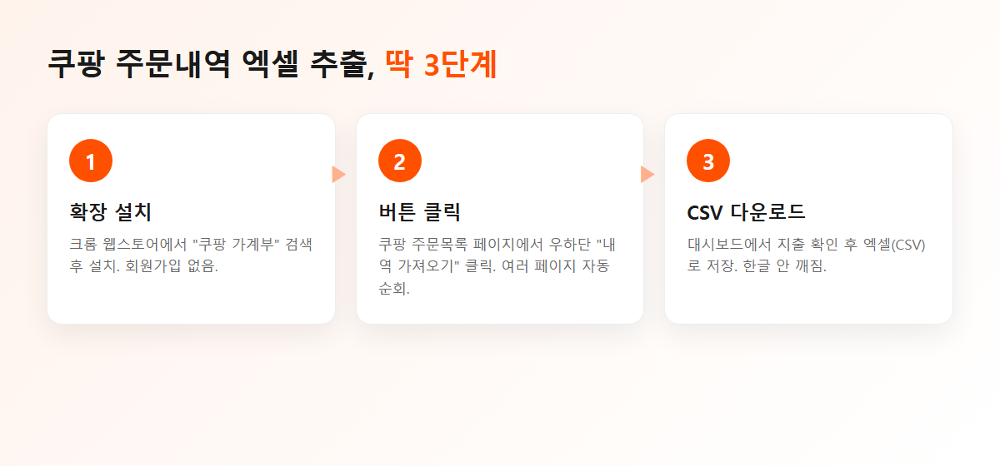

나는 쿠팡을 꽤 많이 쓴다. 생수, 휴지 같은 생필품부터 옷까지 웬만한 건 다 쿠팡이다. 그러다 보니 연말이나 가계부 정리할 때 내가 쿠팡에서 도대체 얼마를 썼나 궁금해지는데, 여기서 문제가 생긴다.
쿠팡에는 주문내역을 엑셀로 내려받는 버튼이 없다. 주문목록 페이지는 눈으로 보기 좋게만 되어 있고, 표로 뽑는 기능은 안 준다. 그래서 예전엔 주문 하나하나 보면서 엑셀에 옮겨 적었는데… 몇 달치 하다 보면 진짜 손목 나간다.
결론부터 말하면, 이 짓을 없애려고 크롬 확장을 하나 직접 만들었다. 지금은 버튼 한 번이면 쿠팡 주문내역이 통째로 엑셀(CSV)로 떨어진다. 어떻게 하는지 정리해둔다.

정확한 이유야 쿠팡만 알겠지만, 쇼핑몰 입장에서 "구매내역 엑셀"은 딱히 만들 이유가 없는 기능이긴 하다. 그래서 사용자가 알아서 챙겨야 하는데, 방법은 크게 두 가지다.
① 손으로 옮기기 — 주문 몇 건이면 그냥 이게 편하다. 근데 경비 정산이나 1년치 지출 분석처럼 양이 많아지면 답이 없다.
② 확장으로 자동 추출 — 페이지에 이미 들어있는 주문 데이터를 읽어서 엑셀로 뽑는 방식. 양이 많을수록 이게 압도적이다.
내가 만든 확장 기준으로 설명하지만, 방식 자체는 참고가 될 거다.
1. 설치 — 크롬 웹스토어에서 "쿠팡 가계부"로 검색해서 설치한다. 회원가입 같은 건 없다.
2. 주문목록에서 버튼 클릭 — 쿠팡에 로그인하고 주문목록(주문/배송조회) 페이지로 가면, 화면 우하단에 "내역 가져오기" 버튼이 뜬다. 누르면 지금 페이지부터 여러 페이지를 알아서 넘기면서 전체 주문을 긁어온다. 나는 1년치가 한 번에 들어왔다.
3. 엑셀(CSV)로 저장 — 수집이 끝나면 대시보드에서 CSV 다운로드를 누른다. 날짜·주문번호·상품명·수량·금액·상태가 열로 깔끔하게 정리돼서 나오고, 엑셀에서 열어도 한글이 안 깨진다. (이거 은근히 중요하다. 인코딩 때문에 한글 깨지는 CSV가 많다.)
| 날짜 | 주문번호 | 상품명 | 수량 | 금액 | 상태 |
|---|---|---|---|---|---|
| 2026-06-28 | 2102305100 | 삼다수 2L 12병 | 1 | 10,900 | 배송완료 |
| 2026-06-28 | 2102305100 | 종이컵 500개입 | 1 | 7,900 | 배송완료 |
| 2026-06-21 | 2102241700 | 무선 마우스 | 1 | 15,500 | 배송완료 |
이 상태면 가계부에 붙여넣든, 피벗으로 카테고리별 합계를 내든, 카드 명세서랑 대조하든 뭐든 편하다.
반복되는 짜증은 웬만하면 도구로 없애는 게 낫다. 주문내역 손으로 옮기던 시간에 차라리 확장을 만드는 게 빨랐다.
이런 거 쓸 때 제일 걱정되는 게 "내 주문 정보 어디로 새는 거 아냐?" 인데, 그게 싫어서 처음부터 데이터를 외부 서버로 안 보내게 만들었다. 긁어온 주문 데이터는 전부 내 브라우저 안에만 저장되고, 쿠팡 계정에는 아무것도 안 건드리는(주문/취소 X) 읽기 전용이다. 로그인도 따로 없다.
쿠팡 주문내역 엑셀로 뽑는 거, 이제 나는 버튼 한 번으로 끝낸다. 매달 경비 정산하는 사람이나, 1년치 쿠팡 지출 한번 뽑아보고 싶은 사람한테는 확실히 시간이 아깝지 않다. 필요하면 써보고, 불편한 점 있으면 알려주면 반영하겠다.
#쿠팡엑셀 #쿠팡주문내역 #쿠팡가계부 #쿠팡구매내역 #주문내역엑셀 #경비정산 #지출관리 #크롬확장 #바이브코딩 #1인개발